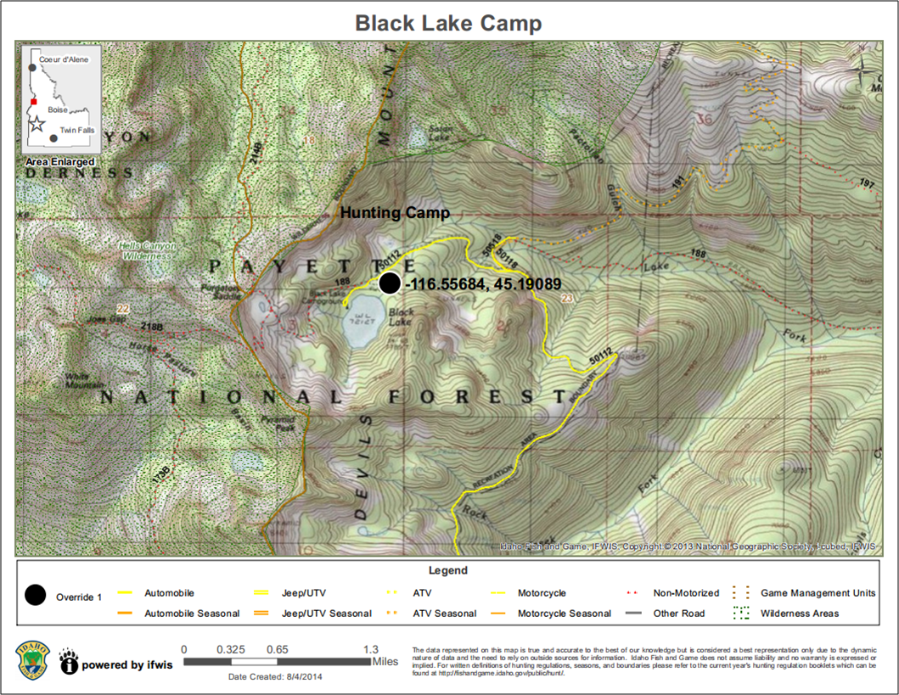

Create Printable Map
CREATE Printable MAP
Create a PDF or PNG of the map for printing or sharing. Once the tool is activated, you can enter a title for your map (optional). Also, you can choose one of 4 print layouts: 8x11 Landscape, 11x17 Landscape, 8x11 Portrait, or 11x17 Portrait and 1 or 2 print formats: PDF or PNG(image). Click the 'Create Map!' button. While the PDF/PNG is being generated, you will see 'Creating Map.." and an animated loading image. When the PDF/PNG is ready, "CLICK HERE TO DOWNLOAD MAP" will appear in the print window. Click the hyperlink to open your PDF/PNG in a new window. Depending on the browser and device you are using, you will be able to save or print the PDF/PNG for use later by using the browser menu or right-clicking the PDF/PNG. The PDF/PNG created will include: a user-specified title, date of creation, legend, scale bar, a state locator map, esri basemap copyright information, and IDFG IFWIS copyright and disclaimer.
The PDF maps are georeference. You can use the Avenza PDF Maps app to interact with a map to view your location, record GPS tracks, add placemarks, and find places on your Apple or Android device. You can also measure height, width, or area and view cursor coordinates using the measure tools in Adobe Acrobat Reader. The maps use coordinate system WGS 84.
NOTE: This tool WILL NOT PRINT Google Basemaps. When creating a printable map, please select a basemap from the top two rows.

Created with the Personal Edition of HelpNDoc: Easily create Help documents